Naruto Uzumaki is a lonely orphan from the Hidden Leaf Village who has a powerful nine-tailed fox demon sealed inside him since birth. Rejected by everyone around him, he dreams of becoming Hokage — the strongest leader of his village — to finally earn respect.
Through years of hard work, painful battles, and unbreakable determination, he proves every single person who doubted him wrong. The boy nobody wanted ends up becoming the person everyone believes in.
Naruto Uzumaki, Sasuke Uchiha, Sakura Haruno, Kakashi Hatake, Itachi Uchiha, Minato Namikaze, Jiraiya, Pain (Nagato), Obito Uchiha, Gaara
Naruto is a popular Japanese anime and manga series created by Masashi Kishimoto. It follows the journey of a young ninja named Naruto Uzumaki who dreams of becoming the greatest leader of his village. The story is full of action, emotion, friendship, and powerful life lessons that connect with millions of fans worldwide.
Naruto has some of the most memorable characters in anime history. From the never-give-up hero Naruto Uzumaki to the cold and revenge-driven Sasuke Uchiha, every character has a deep story behind them. Characters like Kakashi, Itachi, Jiraiya, and Pain are loved by fans for their unique personalities and powerful backstories.
The story begins with a lonely orphan boy who carries a nine-tailed demon fox inside him and is rejected by his entire village. Through years of hard work, painful battles, and unbreakable willpower, Naruto slowly earns the respect of everyone around him. What starts as a simple dream of recognition turns into a journey that saves the entire ninja world.
Naruto is not just another action anime. It teaches real lessons about never giving up, finding strength in pain, the value of true friendship, and breaking cycles of hatred. Whether you are 13 or 30, Naruto will hit different because deep down, everyone has felt like the outsider who just wants to be seen.
Step into the world of ninjas, hidden villages, and legendary battles that have captured the hearts of millions. From peaceful village life to world-shaking wars, Naruto's universe is built on courage, friendship, and the will to never give up.
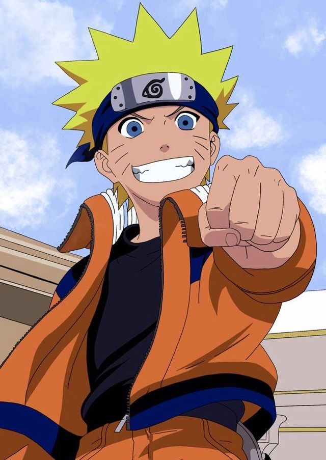
Naruto follows a young outcast ninja's journey from rejection to legend, fighting his way to become Hokage and protect everyone he loves.
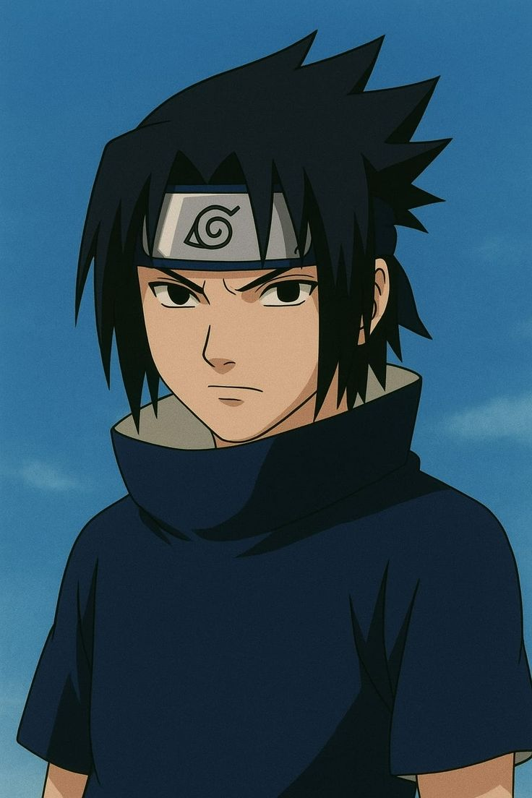
Driven by revenge for his clan's massacre, Sasuke walks a dark road of power before finally returning to the bonds he once tried to destroy.
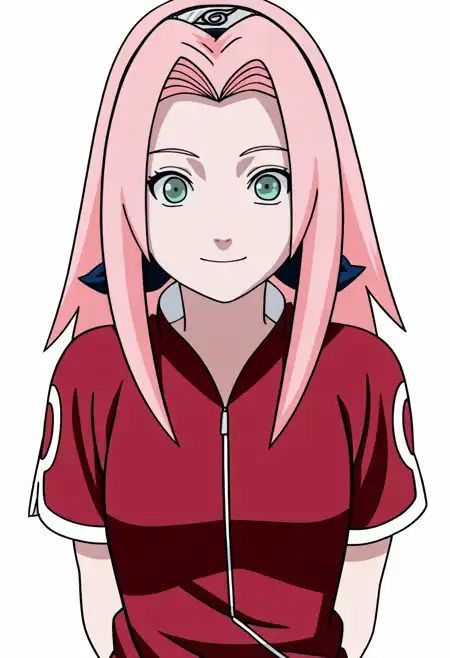
Sakura grows from an insecure girl chasing Sasuke's attention into one of the village's strongest medical ninjas, proving hard work can match any talent.
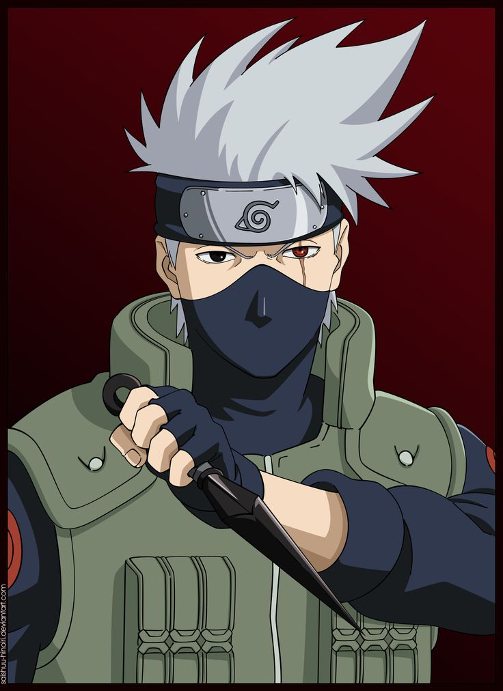
Kakashi is a legendary ninja haunted by the loss of his team, hiding deep pain behind a calm mask and a borrowed Sharingan eye.
Naruto is divided into many story arcs, each with its own battles, emotions, and turning points. Here are the most iconic ones that every fan remembers forever.
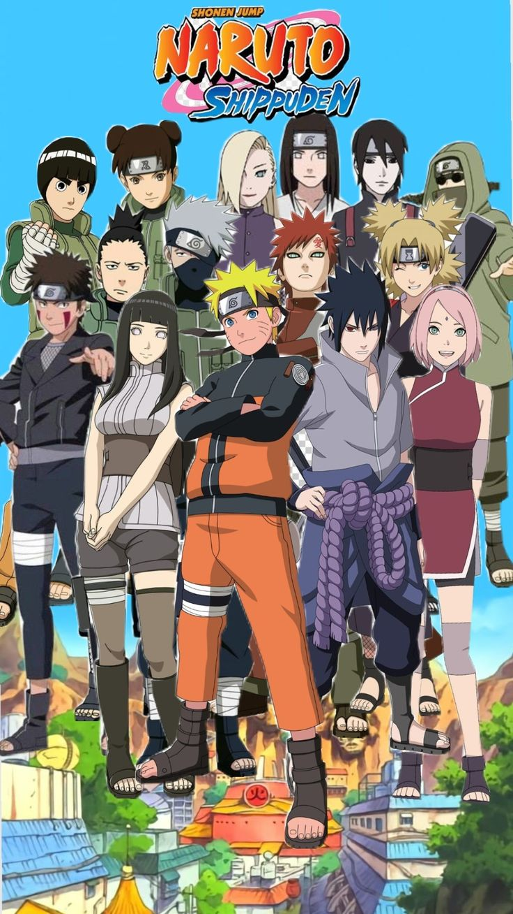
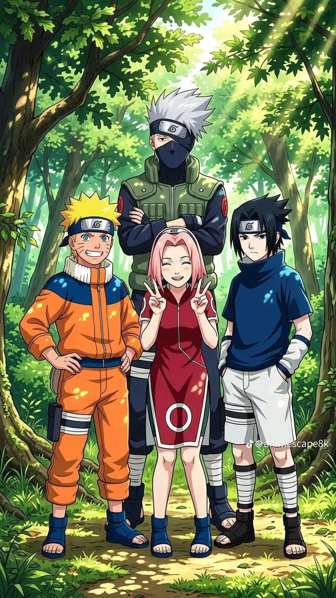
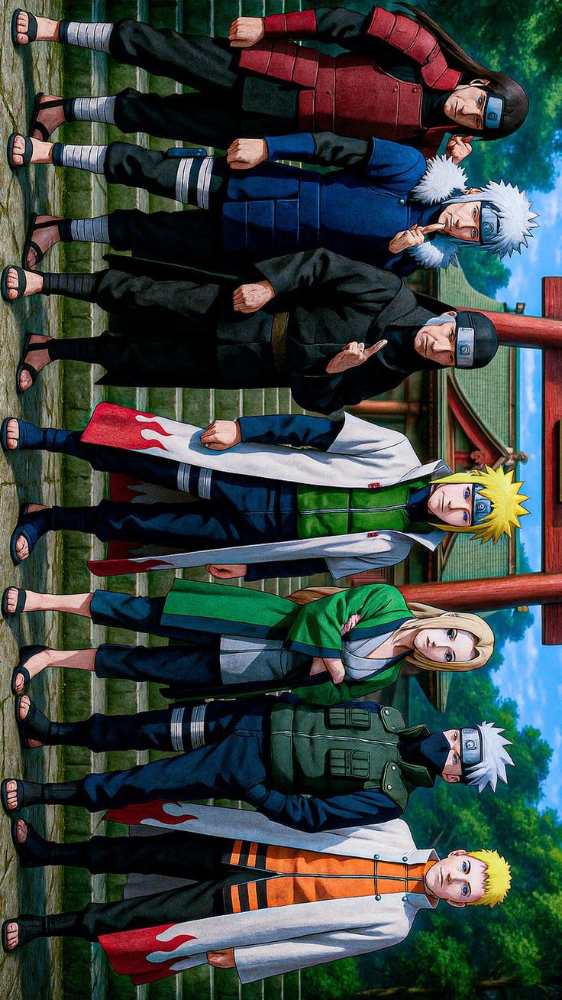
Step into the world of ninjas, hidden villages, and legendary battles that have captured the hearts of millions. From peaceful village life to world-shaking wars, Naruto's universe is built on courage, friendship, and the will to never give up.
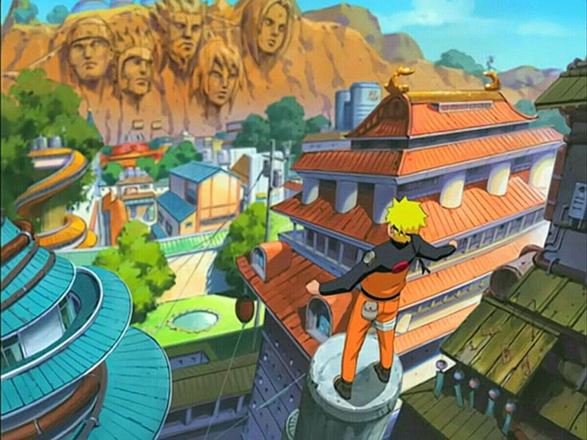
Location: It is situated in the Land of Fire, nestled deep within a forest at the base of Hokage Rock.
Leadership: The village is led by the Hokage.
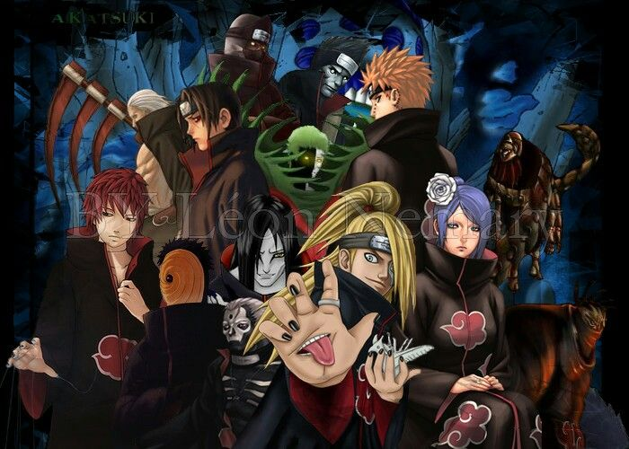
The Akatsuki was a criminal organization of S-class missing-nin formed by Yahiko, Nagato, and Konan to bring peace.
After Yahiko's death, Nagato (using the persona Pain) took leadership, secretly manipulated by Obito Uchiha (posing as Madara Uchiha) and the original Madara Uchiha.
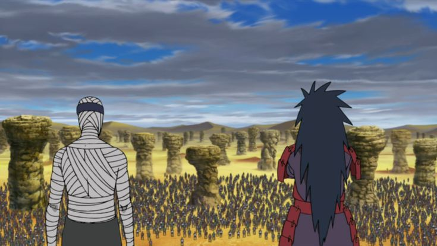
Combatants: The Allied Shinobi Forces fight against Kabuto, Obito, Madara, and Kaguya Otsutsuki
Read and share reviews from Naruto fans. Discover why millions love Naruto's story, characters, and unforgettable adventures. 🍥✨
Naruto is more than just an anime. It teaches friendship, hard work, and never giving up on your dreams. One of the best series I have ever watched.
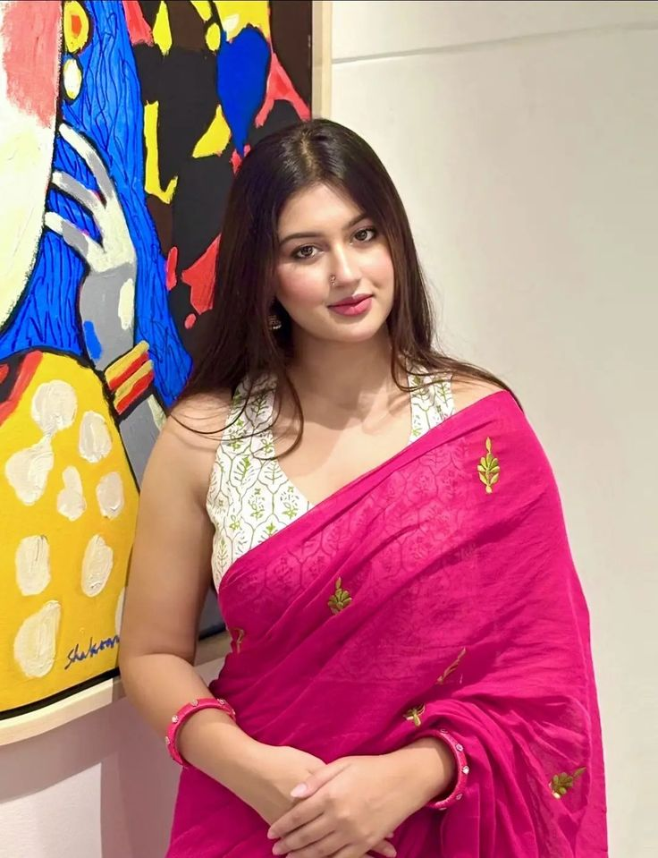
The character development is amazing, especially Naruto's journey from an outcast to the Hokage.
Every episode feels inspiring.
The Epic battles, emotional moments, and unforgettable characters make Naruto a masterpiece. A must-watch for every anime fan.